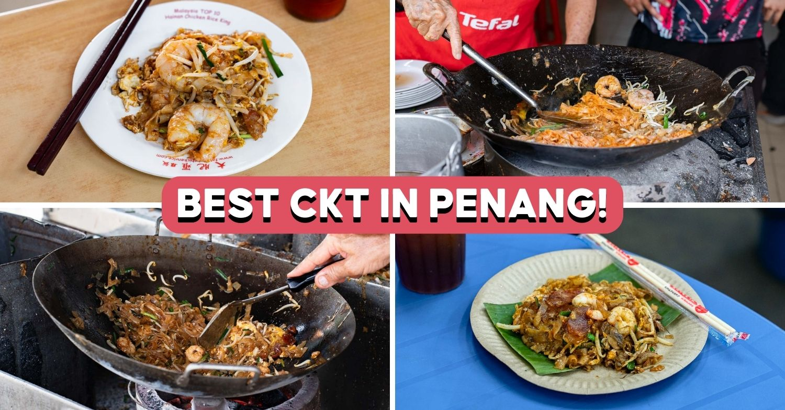
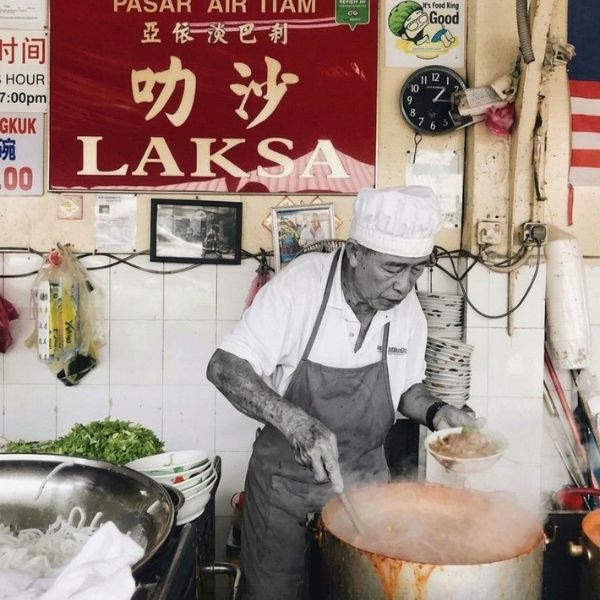
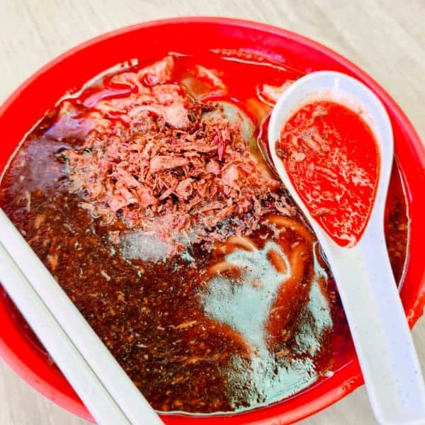
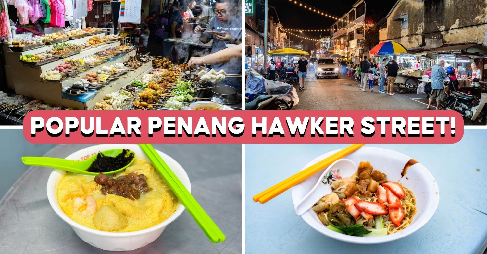
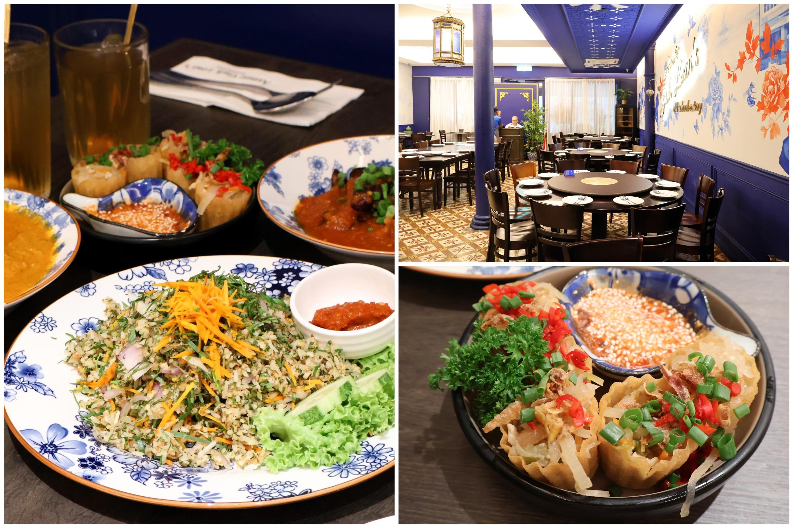
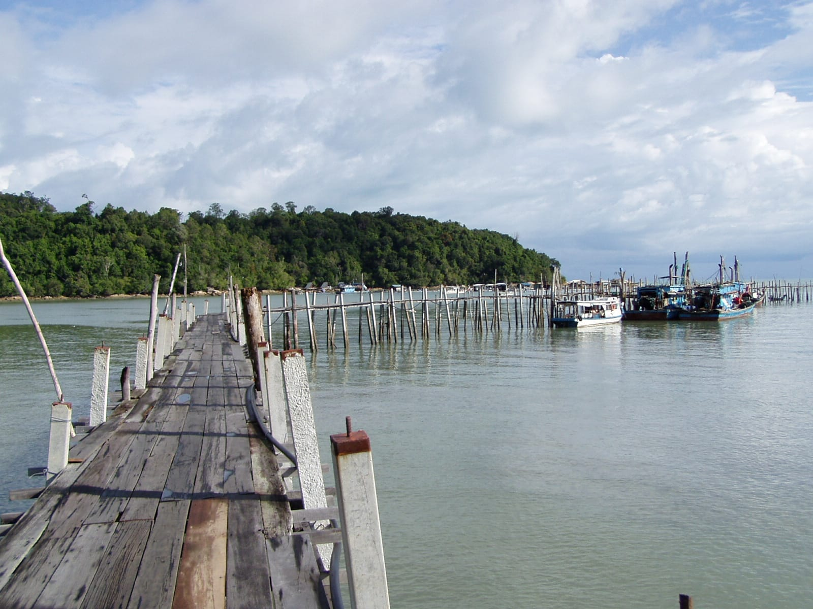
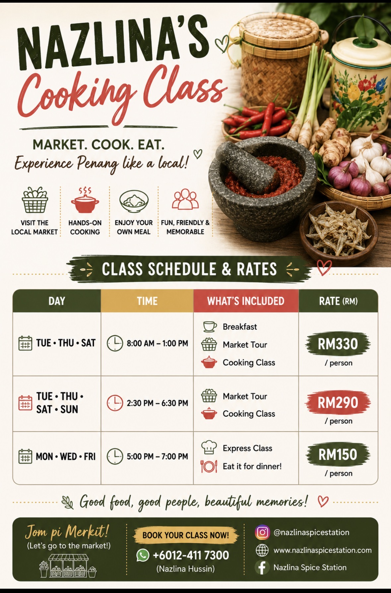

George Town €1.70–2.35Char koay teow
smoky flat-noodle stir-fry, prawns, cockles
Michelin Bib, charcoal wok; hour-long weekend queues [12]
touristyoffbeat
A street-food pilgrim's catalogue — hawker legends, Michelin Bib stalls, kopitiams and a one-star Nyonya kitchen, tagged by neighbourhood and by touristy↔offbeat.
The dishes you came for, each with its best-known address. Hawker plates ≈ €1–3 unless noted; the pin shows where the spot sits between tourist-famous and local-offbeat.

George Town €1.70–2.35
Air Itam · day-trip €1.50
George TownMore plates worth chasing — smaller legends, same cash-and-cockles rules. Timing is the dish: many close by 1–3pm.
"Many stalls, one table." Order from several carts, note your table number, pay on delivery. The two photo cards are the headline hubs; the rest are timing-and-tag rows.
 Pulau Tikus edge
Pulau Tikus edge

George TownThe old coffee-shop ritual: charcoal-toasted bread, thick kaya, soft eggs, robusta kopi.
One strand, not the story. The 2026 guide lists 74 Penang establishments, 33 of them Bib Gourmand — and in Penang the Bibs are mostly hawker stalls, so the "Michelin list" and the "street-food list" heavily overlap [8].

Labour-intensive Peranakan — nasi ulam hand-cut from up to 10 herbs. Held its star; reservations essential [38]
George Town; contemporary fine dining, retained its star in 2026 [8].
Three Penang stalls joined the Bib list — Sifu part of a Peranakan spotlight this year [6][9].
When you want a tablecloth — refined Straits-Chinese rooms, heritage-café afternoons and reservation-only private dining for the special-occasion evening.
Eat for the setting as much as the plate — a stilt village, a hilltop tea-terrace, a temple-foot market and a green rural escape.

George TownA couple-friendly first-day orientation: walk the wet market, then cook the plates you've been eating.

George TownA field guide is only as good as its tip-offs — the stalls, the guides and the Michelin ledger behind these cards.
This catalogue is the Eat axis of a seven-part first-visit guide to Penang. The other angles: